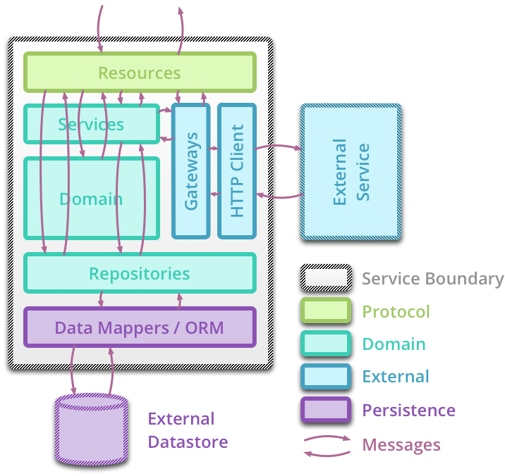
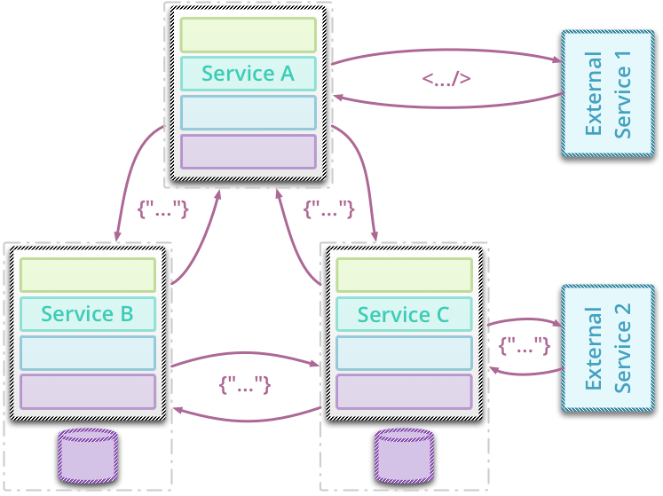
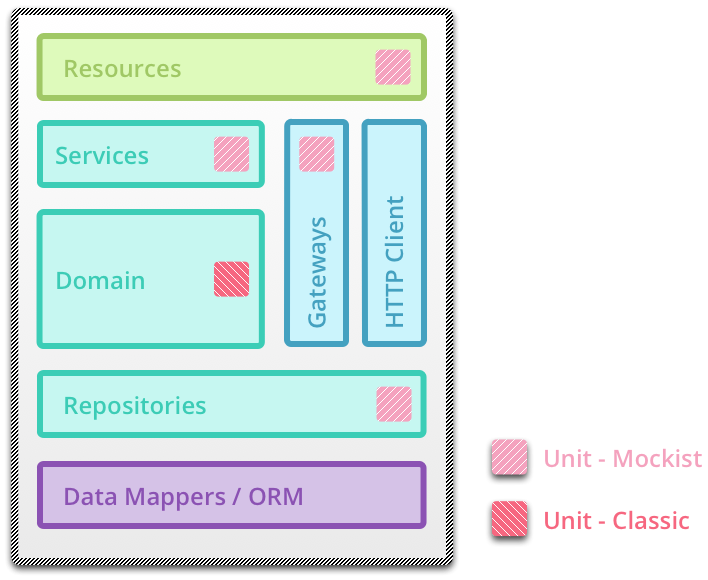

Testing Strategies in a Micro-Service Architecture
Toby Clemson
The Plan
- Micro-Services:
- Definition
- Anatomy
- Architecture
- Testing
- Unit
- Integration
- Acceptance
- End to End
- Contracts
- Conclusion
Definition of a Micro-Service
- Micro-service
-
A small web service supporting a specific task in a broader application work flow.
- Micro in size, usually less than 1000 lines of code.
- Single responsibility principle applied at the service level.
- Often RESTful, modelling concepts as resources and using hyperlinks to associate them.
- May or may not have a UI beyond the core API.
Anatomy of a Micro-Service: Components

Anatomy of a Micro-Service: Communications

Micro-Service Architecture

Micro-Service Testing: Unit Level
- Unit test
- To take the smallest piece of testable software in the application, isolate it from the remainder of the code, and determine whether it behaves exactly as you expect.
Micro-Service Testing: Unit Level
- Two styles of unit testing, mockist and classic.
- Classic: State based behaviour testing.
- Mockist: Interaction testing supported by mocks.
- What should be unit tested?
- Services are commonly a rich domain surrounded by plumbing and coordination code.
- Domain often lends itself to a classic style of testing.
- Plumbing and coordination logic usually easier to test using a mockist style.
- The more micro the services, the more plumbing and coordination logic overall.
- Does comprehensive unit testing pay off?
Micro-Service Testing: Unit Level
